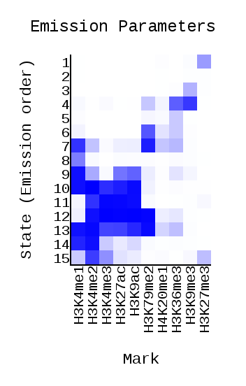
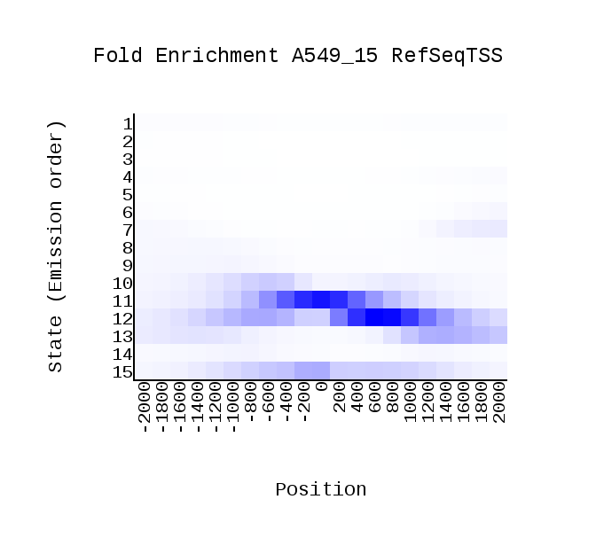

<center><h1>ChromHMM Report</h1></center>
Input Directory: /content/binarizedData/<br>
Output Directory: /content/data<br>
Number of States: 15<br>
Assembly: hg19<br>
Full ChromHMM command: LearnModel -b 200 /content/binarizedData/ /content/data 15 hg19
<h1>Model Parameters</h1>
<br>
<li><a href="emissions_15.svg">Emission Parameter SVG File</a><br>
<li><a href="emissions_15.txt">Emission Parameter Tab-Delimited Text File</a><br>
<br>
<li><a href="transitions_15.svg">Transition Parameter SVG File</a><br>
<li><a href="transitions_15.txt">Transition Parameter Tab-Delimited Text File</a><br><br>
<li><a href="model_15.txt">All Model Parameters Tab-Delimited Text File</a> <br>
<h1>Genome Segmentation Files</h1>
<li><a href="A549_15_segments.bed">A549_15 Segmentation File (Four Column Bed File)</a><br>
<br>
Custom Tracks for loading into the <a href="http://genome.ucsc.edu">UCSC Genome Browser</a>:<br>
<li><a href=A549_15_dense.bed>A549_15 Browser Custom Track Dense File</a> <br>
<li><a href=A549_15_expanded.bed>A549_15 Browser Custom Track Expanded File</a><br>
<h1>State Enrichments</h1>
<h2>A549_15 Enrichments</h2>
 <br>
<li><a href="A549_15_overlap.svg">A549_15 Overlap Enrichment SVG File</a><br>
<li><a href="A549_15_overlap.txt">A549_15 Overlap Enrichment Tab-Delimited Text File</a><br>
 <br>
<li><a href="A549_15_RefSeqTSS_neighborhood.svg">A549_15_RefSeqTSS_neighborhood Enrichment SVG File</a><br>
<li><a href="A549_15_RefSeqTSS_neighborhood.txt">A549_15_RefSeqTSS_neighborhood Enrichment Tab-Delimited Text File</a><br>
 <br>
<li><a href="A549_15_RefSeqTES_neighborhood.svg">A549_15_RefSeqTES_neighborhood Enrichment SVG File</a><br>
<li><a href="A549_15_RefSeqTES_neighborhood.txt">A549_15_RefSeqTES_neighborhood Enrichment Tab-Delimited Text File</a><br>
